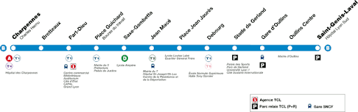

Ligne B du métro

Tracé géographiquement exact de la ligne B. (Source Ferro-Lyon)
- Relie : Charpennes à Saint-Genis Laval Hôpital Lyon Sud
- Ouverture : 1978
- Longueur : 10,2 km
- Matériel roulant : MPL 16
- Nombre de stations : 12
- Pilotage : Automatique
- Communes desservies : Villeurbanne, Lyon, Oullins-Pierre-Bénite, Saint-Genis-Laval
- Correspondances TGV - TER : Gare Part-Dieu - Vivier Merle, Jean-Macé, Gare d'Oullins
- Correspondances Tram : Charpennes (T1-T4-T9), Brotteaux (T1-T4 à distance) Gare Part-Dieu - Vivier Merle (T1-T3-T4), Place Guichard (T1), Jean Macé (T2), Debourg (T1-T6), Stade de Gerland - Le LOU (T10)
- Correspondances Métro : Charpennes (B), Saxe-Gambetta(D)
- Prolongements : Part-Dieu -> Jean Macé (3 stations, 1981) Jean Macé -> Stade de Gerland (3 stations, 2000) Stade de Gerland -> Gare d'Oullins (1 station, 2013) Gare d'Oullins -> Saint-Genis-Laval Hôpital Lyon Sud (2 stations, 2023)
- Projets envisagés : Prolongement Sud vers l'A450 (2035) - Prolongement Nord jusqu'à la Gare de Sathonay-Rillieux (2050)
- Sites touristiques desservis : Ancienne Gare des Brotteaux, Part-Dieu Centre Commercial, Bourse du Travail, Halle Tony Garnier, Stade de Gerland, Théâtre de la Renaissance
- Anecdote : La ligne comprend 2 stations "fantômes" qui n'ont jamais ouvertes malgré des quais construits car les travaux n'ont pas été mené à terme, la station "Lortet" entre Jean Macé et Place Jean Jaurès et la station "Plaine des Jeux" entre Stade de Gerland et Gare d'Oullins